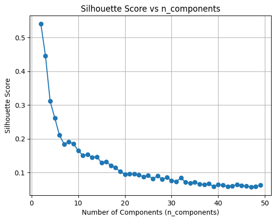
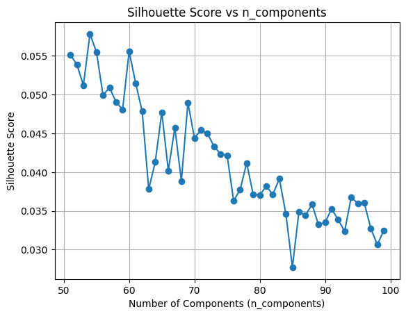
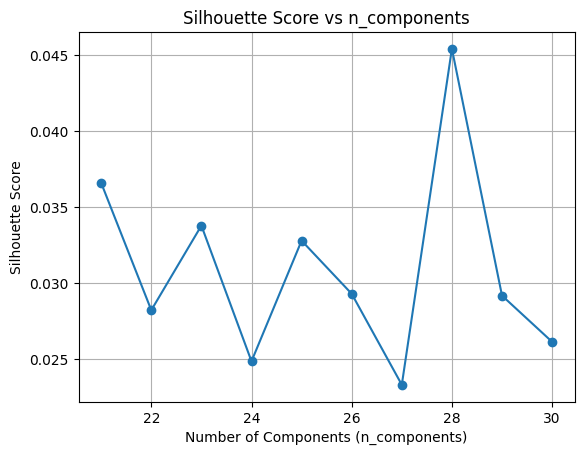
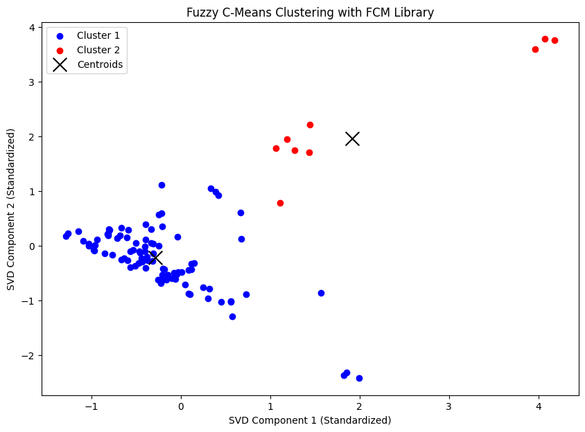

# Mount Google Drive
from google.colab import drive
drive.mount('/content/drive')
Mounted at /content/drive
!pip install fuzzy-c-means
Collecting fuzzy-c-means
Downloading fuzzy_c_means-1.7.2-py3-none-any.whl.metadata (4.7 kB)
Requirement already satisfied: joblib<2.0.0,>=1.2.0 in /usr/local/lib/python3.10/dist-packages (from fuzzy-c-means) (1.4.2)
Requirement already satisfied: numpy<2.0.0,>=1.21.1 in /usr/local/lib/python3.10/dist-packages (from fuzzy-c-means) (1.26.4)
Requirement already satisfied: pydantic<3.0.0,>=2.6.4 in /usr/local/lib/python3.10/dist-packages (from fuzzy-c-means) (2.9.2)
Collecting tabulate<0.9.0,>=0.8.9 (from fuzzy-c-means)
Downloading tabulate-0.8.10-py3-none-any.whl.metadata (25 kB)
Requirement already satisfied: tqdm<5.0.0,>=4.64.1 in /usr/local/lib/python3.10/dist-packages (from fuzzy-c-means) (4.66.6)
Collecting typer<0.10.0,>=0.9.0 (from fuzzy-c-means)
Downloading typer-0.9.4-py3-none-any.whl.metadata (14 kB)
Requirement already satisfied: annotated-types>=0.6.0 in /usr/local/lib/python3.10/dist-packages (from pydantic<3.0.0,>=2.6.4->fuzzy-c-means) (0.7.0)
Requirement already satisfied: pydantic-core==2.23.4 in /usr/local/lib/python3.10/dist-packages (from pydantic<3.0.0,>=2.6.4->fuzzy-c-means) (2.23.4)
Requirement already satisfied: typing-extensions>=4.6.1 in /usr/local/lib/python3.10/dist-packages (from pydantic<3.0.0,>=2.6.4->fuzzy-c-means) (4.12.2)
Requirement already satisfied: click<9.0.0,>=7.1.1 in /usr/local/lib/python3.10/dist-packages (from typer<0.10.0,>=0.9.0->fuzzy-c-means) (8.1.7)
Downloading fuzzy_c_means-1.7.2-py3-none-any.whl (9.1 kB)
Downloading tabulate-0.8.10-py3-none-any.whl (29 kB)
Downloading typer-0.9.4-py3-none-any.whl (45 kB)
━━━━━━━━━━━━━━━━━━━━━━━━━━━━━━━━━━━━━━━━ 46.0/46.0 kB 3.3 MB/s eta 0:00:00
?25hInstalling collected packages: typer, tabulate, fuzzy-c-means
Attempting uninstall: typer
Found existing installation: typer 0.13.0
Uninstalling typer-0.13.0:
Successfully uninstalled typer-0.13.0
Attempting uninstall: tabulate
Found existing installation: tabulate 0.9.0
Uninstalling tabulate-0.9.0:
Successfully uninstalled tabulate-0.9.0
ERROR: pip's dependency resolver does not currently take into account all the packages that are installed. This behaviour is the source of the following dependency conflicts.
bigframes 1.27.0 requires tabulate>=0.9, but you have tabulate 0.8.10 which is incompatible.
Successfully installed fuzzy-c-means-1.7.2 tabulate-0.8.10 typer-0.9.4
from sklearn.metrics import silhouette_score
from sklearn.decomposition import TruncatedSVD
from fcmeans import FCM
import pandas as pd
import numpy as np
from sklearn.feature_extraction.text import TfidfVectorizer
from sklearn.preprocessing import StandardScaler
# Load data
df = pd.read_csv("/content/drive/My Drive/PPW-A/report/Tugas-PPW/hasil_preprocesing.csv")
texts = df['Hasil stopword']
# Preprocessing: TF-IDF
tfidf = TfidfVectorizer()
tfidf_matrix = tfidf.fit_transform(texts)
tfidf_array = tfidf_matrix.toarray()
# Normalisasi data
# scaler = StandardScaler()
# Loop untuk mencari n_components terbaik
best_score = -1
best_n_components = None
silhouette_scores = []
for n_components in range(2, 50): # Coba dari 5 hingga 30 komponen
# Reduksi dimensi
svd = TruncatedSVD(n_components=n_components, random_state=42)
data_reduced = svd.fit_transform(tfidf_array)
# data_normalized = scaler.fit_transform(data_reduced)
# Fuzzy C-Means
fcm = FCM(n_clusters=2, m=2.0, max_iter=1000, error=0.001)
fcm.fit(data_reduced)
cluster_labels = fcm.u.argmax(axis=1)
# Hitung silhouette score
score = silhouette_score(data_reduced, cluster_labels)
silhouette_scores.append((n_components, score))
# Simpan n_components dengan score terbaik
if score > best_score:
best_score = score
best_n_components = n_components
# Menampilkan hasil terbaik
print(f"n_components terbaik: {best_n_components}")
print(f"Silhouette Score terbaik: {best_score}")
# Visualisasi perubahan score
import matplotlib.pyplot as plt
n_components_list, scores = zip(*silhouette_scores)
plt.plot(n_components_list, scores, marker='o')
plt.xlabel('Number of Components (n_components)')
plt.ylabel('Silhouette Score')
plt.title('Silhouette Score vs n_components')
plt.grid(True)
plt.show()
n_components terbaik: 2
Silhouette Score terbaik: 0.5406340728714781

mencari n-component 11-20#
from sklearn.metrics import silhouette_score
from sklearn.decomposition import TruncatedSVD
from fcmeans import FCM
import pandas as pd
import numpy as np
from sklearn.feature_extraction.text import TfidfVectorizer
from sklearn.preprocessing import StandardScaler
# Load data
df = pd.read_csv("/content/drive/My Drive/PPW-A/report/Tugas-PPW/hasil_preprocesing.csv")
texts = df['Hasil stopword']
# Preprocessing: TF-IDF
tfidf = TfidfVectorizer()
tfidf_matrix = tfidf.fit_transform(texts)
tfidf_array = tfidf_matrix.toarray()
# # Normalisasi data
# scaler = StandardScaler()
# Loop untuk mencari n_components terbaik
best_score = -1
best_n_components = None
silhouette_scores = []
for n_components in range(51, 100): # Coba dari 5 hingga 30 komponen
# Reduksi dimensi
svd = TruncatedSVD(n_components=n_components, random_state=42)
data_reduced = svd.fit_transform(tfidf_array)
# data_normalized = scaler.fit_transform(data_reduced)
# Fuzzy C-Means
fcm = FCM(n_clusters=2, m=2.0, max_iter=1000, error=0.001)
fcm.fit(data_reduced)
cluster_labels = fcm.u.argmax(axis=1)
# Hitung silhouette score
score = silhouette_score(data_reduced, cluster_labels)
silhouette_scores.append((n_components, score))
# Simpan n_components dengan score terbaik
if score > best_score:
best_score = score
best_n_components = n_components
# Menampilkan hasil terbaik
print(f"n_components terbaik: {best_n_components}")
print(f"Silhouette Score terbaik: {best_score}")
# Visualisasi perubahan score
import matplotlib.pyplot as plt
n_components_list, scores = zip(*silhouette_scores)
plt.plot(n_components_list, scores, marker='o')
plt.xlabel('Number of Components (n_components)')
plt.ylabel('Silhouette Score')
plt.title('Silhouette Score vs n_components')
plt.grid(True)
plt.show()
n_components terbaik: 54
Silhouette Score terbaik: 0.05780643096935026

mencari n-componenet 21-30#
from sklearn.metrics import silhouette_score
from sklearn.decomposition import TruncatedSVD
from fcmeans import FCM
import pandas as pd
import numpy as np
from sklearn.feature_extraction.text import TfidfVectorizer
from sklearn.preprocessing import StandardScaler
# Load data
df = pd.read_csv("/content/drive/My Drive/PPW/report/tugas_ppw/hasil_prepros.csv")
texts = df['stopword_removal']
# Preprocessing: TF-IDF
tfidf = TfidfVectorizer()
tfidf_matrix = tfidf.fit_transform(texts)
tfidf_array = tfidf_matrix.toarray()
# Normalisasi data
scaler = StandardScaler()
# Loop untuk mencari n_components terbaik
best_score = -1
best_n_components = None
silhouette_scores = []
for n_components in range(21, 31): # Coba dari 5 hingga 30 komponen
# Reduksi dimensi
svd = TruncatedSVD(n_components=n_components, random_state=0)
data_reduced = svd.fit_transform(tfidf_array)
data_normalized = scaler.fit_transform(data_reduced)
# Fuzzy C-Means
fcm = FCM(n_clusters=2)
fcm.fit(data_normalized)
cluster_labels = fcm.u.argmax(axis=1)
# Hitung silhouette score
score = silhouette_score(data_normalized, cluster_labels)
silhouette_scores.append((n_components, score))
# Simpan n_components dengan score terbaik
if score > best_score:
best_score = score
best_n_components = n_components
# Menampilkan hasil terbaik
print(f"n_components terbaik: {best_n_components}")
print(f"Silhouette Score terbaik: {best_score}")
# Visualisasi perubahan score
import matplotlib.pyplot as plt
n_components_list, scores = zip(*silhouette_scores)
plt.plot(n_components_list, scores, marker='o')
plt.xlabel('Number of Components (n_components)')
plt.ylabel('Silhouette Score')
plt.title('Silhouette Score vs n_components')
plt.grid(True)
plt.show()
n_components terbaik: 28
Silhouette Score terbaik: 0.045412432069769075

mencari n-component 181-210#
from fcmeans import FCM
import pandas as pd
import numpy as np
import matplotlib.pyplot as plt
from sklearn.feature_extraction.text import TfidfVectorizer
from sklearn.decomposition import TruncatedSVD
from sklearn.preprocessing import StandardScaler
from sklearn.metrics import silhouette_score
# Load data
df = pd.read_csv("/content/drive/My Drive/PPW/report/tugas_ppw/hasil_prepros.csv")
texts = df['stopword_removal']
# Preprocessing: TF-IDF
tfidf = TfidfVectorizer()
tfidf_matrix = tfidf.fit_transform(texts)
tfidf_array = tfidf_matrix.toarray()
# Reduksi dimensi menggunakan SVD
svd = TruncatedSVD(n_components=2, random_state=0) # Pilih jumlah komponen terbaik
data_2d = svd.fit_transform(tfidf_array)
# Normalisasi data
scaler = StandardScaler()
data_2d_normalized = scaler.fit_transform(data_2d)
# Fuzzy C-Means Clustering
fcm = FCM(n_clusters=2) # Tentukan jumlah klaster
fcm.fit(data_2d_normalized)
# Hasil klaster
cluster_labels = fcm.u.argmax(axis=1) # Cluster dengan keanggotaan tertinggi
df['Cluster'] = cluster_labels
# Menampilkan jumlah data pada setiap cluster
cluster_counts = df['Cluster'].value_counts()
print("Jumlah data pada setiap cluster:")
print(cluster_counts)
# Visualisasi hasil klasterisasi
plt.figure(figsize=(10, 7))
colors = ['b', 'r']
for i in range(2): # Sesuaikan dengan jumlah cluster
plt.scatter(data_2d_normalized[cluster_labels == i, 0],
data_2d_normalized[cluster_labels == i, 1],
color=colors[i], label=f'Cluster {i+1}')
# Menampilkan pusat cluster
plt.scatter(fcm.centers[:, 0], fcm.centers[:, 1], marker='x', s=200, color='k', label='Centroids')
plt.xlabel('SVD Component 1 (Standardized)')
plt.ylabel('SVD Component 2 (Standardized)')
plt.title('Fuzzy C-Means Clustering with FCM Library')
plt.legend()
plt.show()
Jumlah data pada setiap cluster:
Cluster
0 91
1 9
Name: count, dtype: int64
